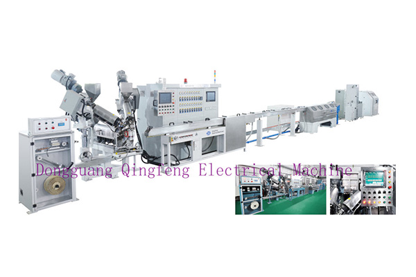

押出机生产设备操作工工作须知的内容
押出机设备生产操作工，是维护保养设备、延长押出机工作寿命的主要负责人。每个操作工都应该明白，减少押出机维修、更换零件次数、延长押出机工作人员使用年限，是降低企业生产发展塑料制品管理成本和提高我国经济社会效益的重要技术措施。设备能长期在最佳发展状态进行工作、塑料的质量和产量的稳定，是保证安全生产技术企业有较高利润的基本生活条件。
操作工能认真按操作规程工作，尽职负责，就是对设备的好维护和保养。所以，新工人上岗前，必须学好、熟记押出机的操作规程，经实际操作考核合格后，才能正式上岗，独立操作。
要自己工作，并成为一名合格的吹瓶机生产操作工，应注意下列事项。
（1）轮班时间
本班生产设备中出现的问题应提示下一班注意交接清楚的问题；当班的生产和产品质量与生产设备做好交接班记录。
（2）接班时
办好交接班手续后，首先年个查看产品的生产质量、检查生产用原料质量、检查押出机料斗内生产用料量，如发现问题应及时向负责人提出。
（3）检查检查押出机机筒、工艺控制温度是否在生产要求的工艺温度范围内。按产品的质量情况，压出机直销，根据自己的操作经验，可适当的调整。
（4）巡视
围绕生产设备巡视一周，检查设备运转时个传动零件的工作情况，看转动是否平稳正常、听工作的声音有否异常、检查加热部位温度是否正常工作。
（5）查表查看操作控制箱上的主电机电压，电流指针，此时的电流表指针应在正常额定电流指标内。
（6）生产一切正常押出机螺杆平稳转动工作，塑料产品均速、平稳的从机头押出；间隔一段时间，看一下产品的外观质量，或取一些产品，检测一下产品的各项指标是否合格。
（7）工作中遇到突然停电时应立即关闭主电机、电热和供料系统开关，各调速开关旋钮调回零位。恢复正常供电时，应先给机筒加热升温，达到生产工艺进行温度后，恒温一段发展时间；用手盘动电机可以连接带，实验螺杆转动的阻力大小；如果一个比较简单轻松，可低速启动电机，开始学习工作。如果一个电流表指针超出额定工作电流值或螺杆启动系统转速不平稳，应及时解决停车，查找问题原因（可能是机筒内料的温度低），查处网络故障分析原因并排除后再开机。
（8）如果停机时间较长或停止生产时机筒内如果是聚烯炳类原料，可不用清理。然后机筒内是聚酰***等原料，则必须清理机筒内的原料；然后再折卸螺杆，清理螺杆和机筒内的粘；螺杆机筒内残料清理干净后，涂一层防锈油，把螺杆包好，垂直吊放在干燥通风处。
